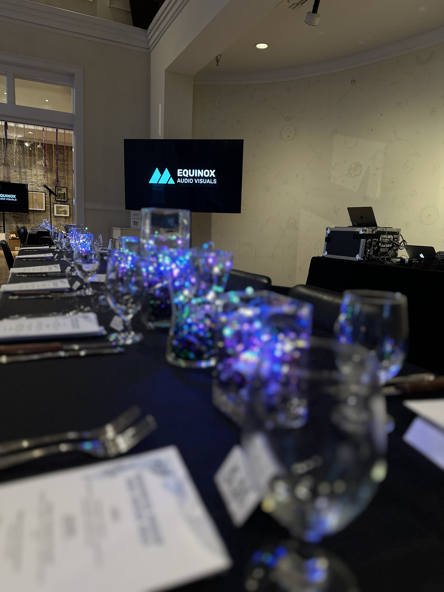

Galas and Non-Profits
Turning Events into Movements.
Fundraising isn't just about asking for money — it's about telling a story that inspires action. It's about creating an emotional connection between your donors and your mission. And when the stakes are this high, the technical execution must be flawless.
We help you tell that story through cinema-quality video displays, perfect audio for your auctioneer, and lighting that creates atmosphere and emotion. When your executive director steps up to make the ask, every word must land. When your impact video plays, every face in the room must be able to see it clearly. That's where we come in.
Strategic Planning: Understanding the Mission
Great galas start with great planning. We begin by understanding your goals: What's your fundraising target? What's the emotional arc of the evening? What moments need to be amplified? Then we design a technical solution that supports that narrative.
We work closely with your event planner, auctioneer, and development team to run a precise run-of-show. We coordinate timing for video playback, lighting cues for dramatic moments, and audio levels for speeches and live asks. We build in contingencies for technical issues and have backup plans for every critical element.
"We understand the stakes of a live ask. When your auctioneer says 'going once, going twice,' the audio must be perfect. When your impact video plays, every donor must feel it. That's our job."
Execution: Precision Under Pressure
On event night, we're there hours before your first guest arrives. We're programming lighting scenes, testing video playback, and running through the script with your team. When the doors open, we're ready. When the auctioneer takes the stage, the microphone is hot and the spotlight is on.
We manage every technical transition — from cocktail hour background music to the dramatic lighting shift when the program begins. We coordinate with your auctioneer to display bid numbers on screens. We cue your impact videos at precisely the right moment. And when your executive director makes the final ask, we ensure every word is heard with clarity and power.
Radical Accountability: We Get It Done Right
Non-profit events operate on tight budgets, and every dollar counts. That's why we're transparent about pricing, efficient with our setup, and committed to delivering maximum impact for your investment. We don't upsell you on equipment you don't need. We recommend solutions that fit your goals and your budget.
We also understand that fundraising events are high-pressure situations. There's no room for error when you're asking donors to open their wallets. That's why we bring backup equipment for everything critical. That's why we arrive early and stay late. That's why we communicate constantly with your team to ensure everyone is aligned.
We've supported galas for museums, schools, hospitals, and community organizations across Vermont. And we're proud to be part of your team — not just as technicians, but as partners in your mission.
Trust the Team: Preparation Over Everything
We've seen it all: last-minute program changes, surprise speakers, technical failures at other venues (that we had to fix), and weather emergencies. Through it all, we've learned one thing: preparation and professionalism win every time.
When you hire Equinox, you're not just getting equipment — you're getting a team that cares about your success. We show up on time, we dress professionally, we treat your venue with respect, and we stay until the job is done. That's the Equinox difference.
How Pricing Works.
We don't publish starting-at prices. Here's why.
A museum gala for 100 patrons isn't the same job as a hospital auction with a 500-person tent. A silent-auction-only evening isn't the same as one with a live paddle raise, a keynote speaker, and a fund-a-need video that has to land at exactly the right moment. Pricing a job honestly means understanding what your evening actually needs to do — financially and emotionally — and building from there.
What we will promise: the proposal we send you is itemized, transparent, and complete. Equipment, crew, hours, travel — every line. No hidden fees, no day-of surprises. If there's a way to do your event for less without compromising the moments that drive donations, we'll name it. If doing it right costs more than you hoped, we'll tell you that too, early enough for you to make a real decision.
The discovery call takes about 30 minutes. By the end of it, you'll have a clear sense of whether we're the right fit — and a ballpark range to work with long before any paperwork shows up.
- Guest count and venue layout
- Silent auction display and ambient audio
- Live auction and paddle raise redundancy
- Keynote or headliner speaker support
- Fund-a-need impact video production
- Lighting for donor recognition moments